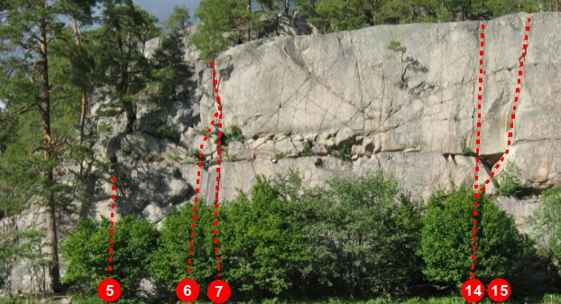
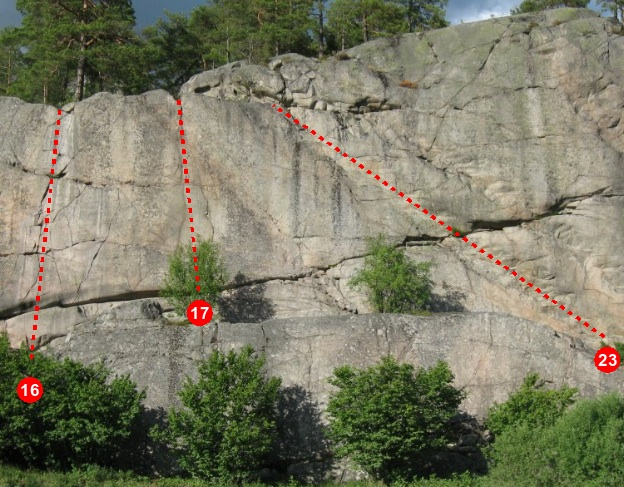
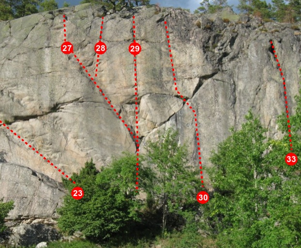
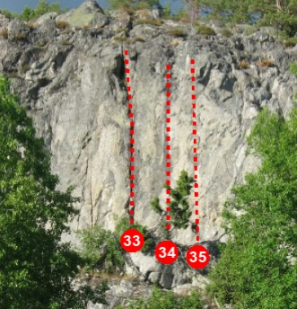

Bistaberget
Lat: 58.6238885690899
Long: 16.857662200927734
[[Image:Bistaberget_full.jpg|thumb|700px|Bistaberget i vårsol 2007. Foto:
Per Lindh
]]
Allmänt
Lång, lodrät ca 20m hög klippvägg med ett 50-tal leder i graderna 3- till 8. Omväxlande och fin klättring..
Beskrivning
Bistaberget i sydöstra Södermanland ligger i den gamla gruvsocknen Tunaberg, bara några kilometer från klättereldoradot
Simonsberget
. Bistaberget är en lång, lodrät vägg som är ca 20 m hög. Här finns i dag ett 50-tal leder i graderna 3- till 8. Många av lederna är borrbultade och försedda med firningsankare. På Bistaberget hittar man även flera fina mix-leder, där (för det mesta) kruxet är bultat medan fina sprickor lämnats för traditionella säkringsmetoder.
Det är inte jättelätt att tälta vid Bistaberget, men med lite god vilja finns det plats för 2-3 tält på hällarna 20m in i skogen från toppen.
En förare som täcker Simonsberget, Bistaberget samt andra berg i Södermanland utkom i november 2006. Beställ via
.
Under hösten 2009 har flera nya ankare satts upp och några leder fått nya bultar. Arbetet kommer att fortsätta under början av 2010. Mer info på
.
Vägbeskrivning
<div style="float:right; border: solid 1px #a0a0a0; margin: 3px; padding: 3px;">
<googlemap lat="58.63228891561829" lon="16.828994750976562" zoom="12" width=250 height=200 type="map">
58.6238885690899,16.857662200927734, Bistaberget
</googlemap>
</div>
Om du kommer E4 norrifrån, sväng av vid Nyköping V - det är den sista Nyköpingsavfarten. I andra rondellen sväng höger på väg 53 mot Oxelösund. Följ skyltar mot Nävekvarn. I Nävekvarn, ta vänster när du kommer till T-korsningen i samhället, och fortsätt ca 3.5km. Berget ligger vid vägen och går inte att missa.
Tänk på att parkeringsfickan vid berget även är infart till åkern för bonden och hans traktor. Parkera snällt.
Leder

- 1
- Trabant
- 4a
- orensad sololed. inte kul!
- 10
- Skriet från vildmarken
- 6b
-
- 11
- Kapten Krok
- 6a
- Börjar i en sprickformation, fortsätter upp i ett mindre dieder, via en hylla och sen upp i den större (jam)sprickan. Egentligen ren tradtur men går rakt över första bulten på ...förbannelse.
- 12
- Kapten Kroks förbannelse
- 6a+/6c
- Samma insteg som Kapten Krok men går efter hyllan rakt upp via 3 bultar. Två utstegsvarianter, 5a och 6c.
- 15
- Änglatrappan
- 6b
- Mycket fin och varierande led. Går genom den tydliga "alkoven" upp i ett system av diedrar, sprickor och annat skoj. Säkrad med 3bb, en pitong och egna säkringar (välsäkrat) sista halvan.

- 16
- Ta av dig skorna
- 6b+
- Trevlig, brant klättring upp via ett tydligt system av sprickor. Börjar till höger om sprickan som leder upp i spricksystemet och traverserar vänster in i sprickorna via några crimpar. Välsäkrad. Stor bastant tall på toppen om man vill topprepa (ta med statiskt rep).
- 23
- Vampyren
- 6a+
- Halva leden välbultad, sista halvan egna säkringar. Ankaret finns en bra bit ut till vänster förbi den lilla tallen. Det finns även en kilsäkrad utstegsvariant med samma grad som går rakt upp i slutet, gjord av Andreas Harne i sept 2011. Ett ordentligt firningsankare ska sättas på varianten, i dag sitter en ensam bult där.

- 26
- Anarkisten Direkt
- 7b
- Graden är omdiskuterad. I föraren står den som 7b+, vilket är mycket generöst. Många tycker den snarare är 7a+.
- 27
- Ättestupan
- 5b
- Trevlig, välbultad led (förutom insteget). För graden exponerad och fin klättring.
- 28
- Våga lite mer
- 6a
- Mycket fint, kilsäkrat utsteg. Går på stora grepp upp i den tydliga sprickan.
- 29
- Anarkisten
- 6b+
- Börja i Ättestupan, gå sen rakt upp vid "taket". Följer den lodräta sprickan rakt upp, bygg ankare i tallen. Suverän, ihållande klättring.
- 29a
- Dystopia
- 7a+
- Börja i Ättestupan, men gå omedelbart spikrakt upp och in i Lilla flickan zombie. Riktigt häftiga positioner.
- 30
- Lilla flickan zombie
- 7a
-

- 33
- Parkering förbjuden
- 6a
- Den extremt tydliga och stora sprickan. Inte så lätt som den ser ut, dessutom ganska mossig.
- 35
- Los Suecos borrachos y un coche
- 6a+
- Lite fingrigt och pilligt på för berget ganska annorlunda klippa; eroderad, skrovlig och kalkstenslik.
- 42
- Moonwalker
- 8a
- Södermanlands första 8a
Övre väggen
Länkar
Här finns en förare tillhandahållen av
.
kategori:Nyköping
kategori:Södermanland
Kategori:Vertikalt
Kategori:Sport
Kategori:Trad